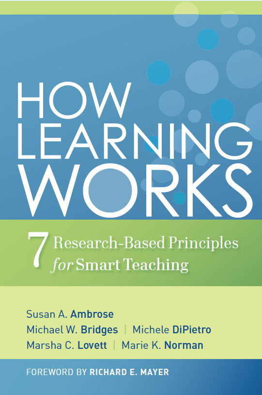
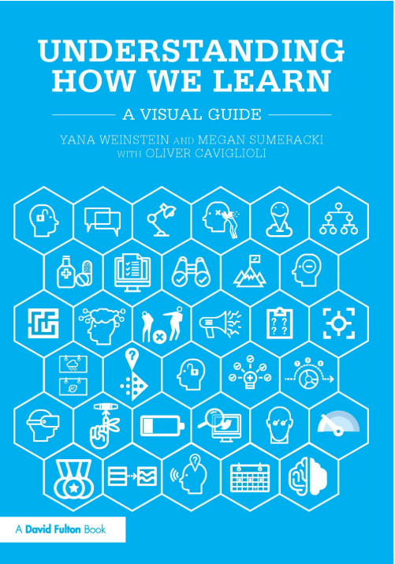
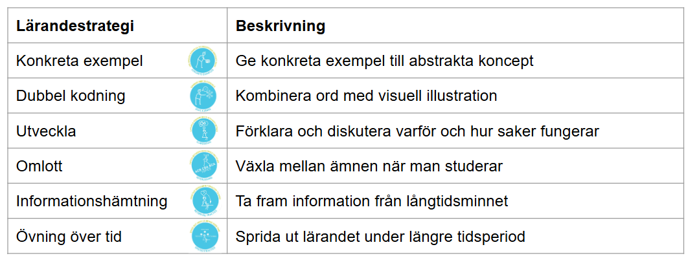

Pedagogik och ramverk

Kursledarprogram WCS 2025
Hur lär man sig?
Pedaogogiska principer som ramverk för kursupplägg
Ramverk
Konkret struktur, liten eller stor, som kan användas under kurser/kurstillfällen
Vad är lärande?
Lärande kan beskrivas som en process som leder till förändring, vilket sker som ett resultat av erfarenhet.
3 viktiga delar:
- Lärande är en process, inte en produkt
- Lärande involverar en förändring i kunskap, övertygelser, beteenden och/eller attityder
- Lärande är inte något som görs på studenter, snarare något som studenter gör själva
Hur fungerar lärande?
Det korta svaret:
Ingen vet exakt hur det fungerar
Flera olika modeller:


Understanding how we learn

Understanding how we learn
Konkreta exempel
Följarinitierad styling: Ge ett exempel där ni visar följaren som initierar styling
Understanding how we learn
Dubbel kodning
Visa ankarsteget samtidigt som ni ljudar “ank-ar-steg”
Understanding how we learn
Utveckla
Varför gör vi en fördröjd viktförflyttning? Den hjälper oss bibehålla connection
Understanding how we learn
Omlott
Växla mellan 2 saker
Understanding how we learn
Informationshämtning
Be deltagarna demonstrera en whip
Understanding how we learn
Övning över tid
Repetera turer och principer under flera lektioner
How learning works: 7 principer för lärande
How learning works: 7 principer för lärande
1. Elevens tidigare kunskaper kan hjälpa eller hindra lärande
Elever lär sig bättre när de kan koppla den nya kunskapen till kunskap de redan har.
Krävs att kunskapen de har är korrekt.
Exempel: Om en deltagare kan whip och free spin kan den kunskapen användas för att förklara en reversed whip.
How learning works: 7 principer för lärande
2. Hur eleven organiserar sin kunskap påverkar hur de lär sig och tillämpar vad de lärt sig
Kunskap kan organiseras utefter flera olika grupperingar. Deltagare som har en bra struktur för att organisera sin kunskap lär sig bättre.
Exempel: Organisera turer i pushes, passes och whips. Eller beroende på sida följaren passerar.
How learning works: 7 principer för lärande
3. Elevens motivation bestämmer, fokuserar och bibehåller vad de gör för att lära sig
Om en deltagare inte finner en kurs intressant eller relevant, ser de inget värde i att behärska innehållet.
2 centrala koncept för att förstå motivation: 1. Det subjektiva värdet av målet 2. Förväntningarna på att de ska uppnå målet
How learning works: 7 principer för lärande
3. Elevens motivation bestämmer, fokuserar och bibehåller vad de gör för att lära sig
Deltagarens mål behöver inte alltid vara samma som lärarens mål för deltagaren!
Olika typer av mål: 1. Prestationsbaserade mål (klara 5 one-foot spins) 2. Lärande mål (Lära sig förstå materialet) 3. Känslomässiga mål (Göra en rolig aktivitet) 4. Sociala mål (träffa nya kompisar)
Ju fler mål en aktivitet adresserar desto högre motivation har deltagaren
How learning works: 7 principer för lärande
3. Elevens motivation bestämmer, fokuserar och bibehåller vad de gör för att lära sig
Ett måls subjektiva värde är vad som påverkar motivationen för att uppnå det.
Deltagare är motiverade av aktiviteter som har ett mål med högt subjektivt värde.
Deltagare är motiverade av mål där de tror att de har förmågan att lyckas uppnå dem.
Deltagarens motivation ökar om hen upplever miljön som stödjande.
Exempel: Skapa övningar som är lagomt utmanade där deltagaren har tidiga möjligheter att lyckas. Aligna innehåll med deltagarens mål.
- För att utveckla sakkunskap måste eleven skaffa sig komponentskicklighet, träna på att integrera dem och veta när de ska tillämpa det de lärt sig
How learning works: 7 principer för lärande
- Målstyrd träning kombinerad med riktad feedback ökar kvalitéen på elevens lärande
- Elevens nuvarande utvecklingsnivå interagerar med det sociala, känslomässiga och intellektuella klimatet på kursen, och påverkar därmed lärandet
- För att bli självstyrande i sitt lärande måste eleven lära sig att övervaka och anpassa sitt sätt att lära
Olika ramverk
Upplägg av kurstillfällen
- Repetition av föregående tillfälle
- Tekniskt koncept
- Tur som kräver det tekniska konceptet
Exempel:
- Repetera föregående tillfälles tur: Left side pass
- Tekniskt koncept: snurrteknik (prep, spotting, korta steg)
- Tur som kräver det tekniska konceptet: Left side turn
Pedagogisk princip
- Repetition krävs för lärande
- Fokus på en sak i taget vid inlärning av nytt koncept
- Integrering av ny kunskap i gammal befäster den
- Genomgående repetition och feedback stödjer lärande
Visa, Pröva, Instruera, Öva
Bra vid utlärning av turer. Använder flera sinnen, visuellt, auditioriellt (räkna och säg vad ni gör), kinestetiskt?
Frågor och feedback
Uppmuntra till frågor. Förklara varför något är på ett specifikt sätt. Deltagare lär sig av att fråga
Rotation och placering
High fives för tillhörighet. Förare eller följare kan rotera, det spelar ingen roll även vid ojämnt antal
Lärarlett eller ej
Börja med lärarlett, fortsätt med räkning och avsluta med att deltagarna själva får starta och välja turer
Att inkludera
- Hur fungerar lärande?
- VPIÖ
- Upplägg av kurstillfälle
- Rotationer och placeringar
Kursledarprogram WCS 2025-2026